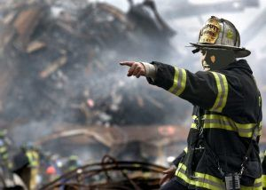
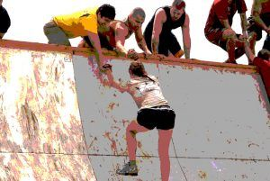
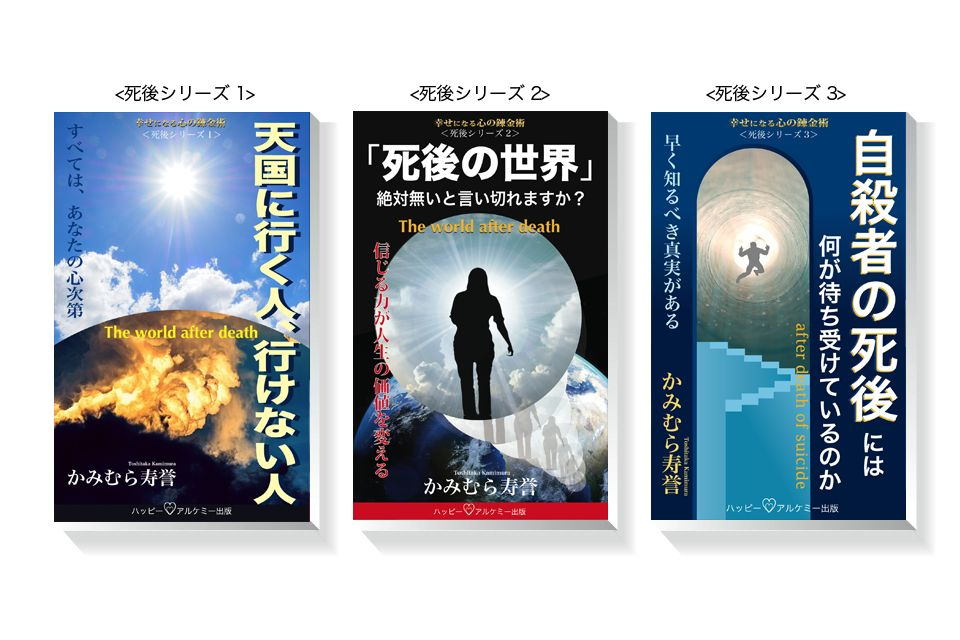

| 「死後の世界」: 絶対無いと言い切れますか？ （死後シリーズ） | |
| かみむら寿誉 | |
| (2017) | |
「死後の世界」を信じている日本人は、最近はすこし増えているようです。
大震災など自然災害によって、大勢の人が亡くなっている現状を目 の当たりにする機会が増えたこともあるかもしれません。
大災害により、人が果敢 なくこの世を去るのを観ると、心情的にも「死後の世界」があったほうが報われるという思いもあるでしょう。
それでもまだ、「死後の世界」を信じていない人が、かなりの割合でいるようです。
人は、世間のアクシデントやブームに影響されて、考え方がよく変わります。
現代は、情報化社会なので様々な正しい情報や悪い情報まで流れています。
この中で、本当に人にとって有益で役に立つ情報を選び取るべき感性や知性、悟性というのも必要になってきました。
この情報の取捨選択 によって、未来社会が明るいものになるか暗くなるかの結果がでてきます。
社会という中で生きている人達が選んで来た結果が、その先の未来を創っていくのです。
その中で、間違った情報を信じた人の割合が多い場合は、それなりのリスクを背負う未来がやってくるのです。
これは、「原因結果」「因果応報 」という普遍 の法則というものがあるからです。
人は気がつく、気がつかないに係わらず宇宙や地球や自然は「普遍のルール」に基づいて、人を生かし続けています。
現代の人々は、この「普遍のルール」を忘れてしまい、この世の物質世界に洗脳されているのです。
人として最低限、もっていた方が良い知識というのがこの「普遍のルール」でもあります。
この知識を信じてもっているのと、いないのでは「月とスッポン」くらい人生観が違ってくるでしょう。
特に、「死」は誰でも平等に訪れます。だから、本来は防災意識以上にもっておくべき知識なのです。
2017年5月
幸せな心の錬金術 かみむら寿誉
「日本人の国民性調査」を行っている統計数理研究所が、発表した死後の世界（あの世）を「信じる」か「信じない」の調査によると
2008年
・信じる 38％
・信じない 33％
・わからない、その他 29％
2013年
・信じる 40％
・信じない 33％
・わからない、その他 27％
という結果になっています。
これは2013年は、2011年の東日本大震災などの影響も有り、信じる割合が少しだけ多くなっているような気がします。
この調査結果の中で、信じる信じないのどちらでもない人が3割近くになっていますが
この人達が、世間のアクシデントやブームの影響に動かされて、信じる信じないの割合を変えているのかもしれません。
統計数理研究所 http://www.ism.ac.jp/kokuminsei/table/index.htm
「死後の世界」が無いと言い張っている人の考えを聞くと
「あるなら証明しろよ」ってよく言われますが、そのような人は「信じる力がない人」と思ってしまいます。
それに「死後の世界」があるのは、面倒くさいから無い方が楽」という人もいます。
最近は、唯物主義 や脳科学などの影響で「カラダ（肉体）が無くなるから存在は無くなる」
「幽霊や超常現象は頭脳が創りだした幻想」というのもあり、特に輪をかけてマスコミ媒体が間違った情報を流すおかげで、無い方を信じる人も多くなってきています。
このような証明主義や唯物主義、自己中心的な感情で間違った思い込みをしている人達がたくさんいます。
「死後の世界」が「無い」という人の中には、死んだら真っ暗闇に置かれると思っている人もいます。
勘違いだと思いますが、真っ暗闇というのは、「空間がある」ということなので
死後の世界はあるということになります。
実際、地獄は真っ暗闇なところは多いので、真っ暗闇にいると気がついたら、そこは地獄なのです。
「死後の世界」が「無い」という人は、死んだら意識も何も無い訳だから、「無い」という判断すらできないはずです。
「死後の世界」が、本当に無かったら「無かった」と思う自分も存在していないはずなので、
本当は、死後の世界が「ある」「無い」のどちらかの選択や議論をするまでも無いのが本当のところです。
それより大事なのは、もし「死後の世界」があったら、どうするか？
ではないかと思うのです。
その時に後悔しないように準備をしておくことも必要ですし、余計なお世話かも知れませんが、何より人生観が大きく違ってくることをお伝えしたいのです。
神の創られた世界は「この世」の3次元世界だけではなく、「あの世」には4次元以降の世界がたくさんあります。
「この世」と対比するところに「あの世」があるように感じますが、本当は死後の世界の中に「この世」も含まれているのです。死後の世界とは、霊的世界であってこの中に「この世」という異質な世界があるのです。
（死後シリーズ「天国に行く人，行けない人」に霊界構造の図あり）
4次元には、迷いの世界や地獄と天国の一部があり、5次元以降は、天国から神に近い世界まで次元が分かれています。
人間は、本来さまざまな天国の住人であり、「この世」に目的があって生まれてくるのです。
天国が故郷であり、真実の世界（実相の世界）であり、この世は魂の成長のための学校のようなもので異質な世界なっているのです。
天国では、同じような気持ちの通った者たちが、仲良く平和に暮らしています。
しかし、軋轢 やストレスのあまりない、ポカポカした天国に長く住んでいれば人間（魂）の成長が遅れるようです。
本当はその天国よりもっと素晴しい幸福な世界があるのに、向上心もなく馴れ合いになってしまい、魂の成長が遅れてしまうことに神は懸念をして3次元世界に学校のような「この世」を創ったと言われています。
この世には、様々に違う次元の魂が、天国から地上へ人間として生まれてきます。
地獄から目覚めて天国に帰った魂や神格のある魂までさまざまな個性をもった魂が「この世」に人間として生まれ変わっているのです。
天国では波長同通の法則によって似た者同士が、同じ村や町に住んでいたのですが「この世」は、ごちゃまぜの異質な世界になっています。
※波長同通とは、類は友を呼ぶように同じような波長同士が集まることです。
その波長の違う様々な人々が、「この世」に生まれますが、その代わりに全員が共通なものとして、カラダ（肉体）という不自由なものを着ることで、お互いが違う次元の天国から来たことが解らない様になっているのです。
それとほとんどの人間は生まれる前の記憶も消されてしまいます。
もし、過去の記憶が残っているとそれに縛られてしまい、新たな経験ができないからです。
それに自己実現するための向上心を活かせる世界が、「この世」の3次元世界なので、
様々な天国の世界から、「この世」に何度も生まれ変わり、 切磋琢磨 や軋轢、ストレスを経験して
学んでいき、また、自己実現の機会によって魂を成長させることが目的にもなっているのです。
「死」というのはカラダ（肉体）から魂（心）が完全に抜けてしまう状態です。
詳しくは、シルバーコードといって肉体と霊体（魂）を繋ぐ「へその緒」みたいなものが切れたら「死」ということになります。
最近、脳死が人の死といっていますが、このシルバーコードが切れていなければ「死」とは言わないのです。脳死は「死」ではありません。「心」は脳にはありませんのでまだ、生命はあります。
医療業界は、実際は恐ろしいことをしているのです。
筆者は、幽体離脱 を何度か経験しているのですが、実際にカラダ（肉体）から自分自身が抜け出る感覚があります。
胸や溝内あたりに振動を感じて、蛹 から蝶が抜け出るような感じで起き上がって上昇していきます。
帰りは水平飛行で頭の方から戻ったのは覚えていますが、肉体におさまる瞬間は記憶にないです。
いつも、この出入りの瞬間は急なのであまり覚えていません。
カラダ（肉体）から抜けた霊体らしきカラダは、肉体を着ている状態とあまり変わりません。
重い肉体を一枚脱ぎ終わった感じがして、非常に軽く感じます。
手も足もあり、筆者の抜け殻と妻の寝ているところを観ることができます。
リビングに行って何度も気持ちよく飛び跳ねてから、天井を突き抜けて外へ出たこともあります。
霊体らしきカラダは、肉体に重なって存在しています。
この世では普通は、目にはっきりとは見えませんが、この霊体、魂の中心にあるのが「心」なのです。
この「心」は思考の中心であり「あなたは何者ですか？」と言われた時に判断できるものが、「心」なのです。
人は病気、事故、災害、寿命など死ぬ原因はさまざまですが、この霊体らしきカラダがあるので、自分はまだ生きていると錯覚してしまい「死」を悟るのが難しいのです。
現場にまだ、霊体らしきカラダとして残っているので、すでに「死後の世界」いることに気がつかないのです。
風景も廻りの状況も生きている時と変わらなく観えるからです。
特に、突然の事故、災害死などは、死んだことを理解するのが難しいのです。
葬式で亡くなった人を弔 うことは人として常識です。
しかし、亡くなった人の供養をすれば、それで終わりなのでしょうか。
死者のことは、坊さんや牧師さんに任せておけば、それで良いのでしょうか。
筆者は、地方自治関係のボランティアもしているために、様々な宗派や新興宗教の葬儀やお通夜をみせて
いただく機会が多いのですが、
そこでは、死者を弔うための葬儀・葬式の形や作法ばかりが取り出されているように感じられます。
残された親族などと別れを惜 しむための行事としては、いいと思いますが
生きている人のためだけではなく、死者のためにあまり役にたっていない感じがします。
最近では、家族葬なども多くなっているせいで、お坊さんもお経を上げるだけで、必ず法話をするという
わけではないようです。
本来は葬儀・葬式では、お坊さんや牧師さんは死者がどのような世界に帰るのか、「あの世」霊や魂のはなしをしてもいいのではないかと思います。
「死」というものに向かい合う良い機会なので、残された親族や関係者と死者（魂）に自信をもって宗派独自の「あの世」霊や魂の話をして欲しいと思っています。
本来、お坊さんや牧師さんは、死者に引導を渡す役目があるからです。
死者は、自分自身が死んでいることを悟るのは、以外にも難しいのです。
突然ではない病死の場合は時間の経過で、ある程度自覚症状がありますが、事故や天変地異、他殺など突然の出来事で死んだ場合は、自分自身が死んでいることを自覚するのが難しいのです。
それは、幽体離脱のところでも書きましたが、カラダ（肉体）は死んでも、魂として霊体らしきカラダがあるからで、実際に「この世」にいるのと変わらなく感じるからです。
そのせいで、「あなたは本当は死んでいますよ」「わかっていますか？」と言っても理解していない死者（魂）もいるのです。
それに突然に死が訪れた場合は、無念の気持ちの方が強く、死んだことが信じられないので、なおさら生きていると錯覚しているのです。
葬儀やお通夜では死者の遺影があり、身内や友人が泣いている姿を見て、自分が死んだことを理解する死者もいますがパニックに陥る死者もいます。
それは葬儀でもよく解ります。
お経は聞いて意味がわからないのは、生きている人も死者（魂）も同じです。
本来は、お坊さんや牧師さんがパニックに陥っている死者に対して法話に絡めて、やさしく説得して
「あの世」に引導を渡さなければならないのです。

天変地異などの自然災害やテロや戦争などの人為的災害では、大勢の人達が亡くなってしまいます。
これも突然、死に見舞われることが多いので霊（魂）もパニックになっているのは想像できると思います。
しかし、大勢の死者は全員同じような死後の境遇や状況にはなりません。
死後の境遇、状況は死者（霊）によって違いがあります。
ニューヨークで起きた同時多発テロの世界貿易センタービルでは2000人近くの人がお亡くなり、とても悲しい出来事でした。
このような突然の出来事では、多くの死者（霊）がパニックに陥ったはずです。
筆者は、それから数年後に、ニューヨークにいく機会がありました。
地下鉄に乗ってグランド・ゼロに行きましたが、地下鉄から地上に出た瞬間、自然に涙が溢れてきたのです。
それは、自分でも不思議でしたが、筆者自身が泣いているのではなかったのです。
グランド・ゼロにまだ残って居る大勢の霊（魂） の悲しみが、一瞬にして伝わって涙を流させたような感じがしました。
もう数年も経っていたのに、まだ「あの世」に成仏していない霊（魂）も居るのです。
このように迷っている霊（魂）もいますし、もうすでに「あの世」に帰っている霊（魂）もいます。
日本も、悲しい事に震災による大災害でとても大勢の死者がでましたが、東日本大震災後に各地で幽霊の話がたくさん出ているようですが、これも実際は成仏していない霊（魂）がまだ居るのだろうと思います。
突然の出来事で、本当に無念な思いをもっていると思いますが、早く成仏してほしいと願っています。

大きな災害時は、「あの世」では大変なことになっているようです。
自力で天国に行ける霊（魂）は、生前に「あの世」を信じていたり神様を信じている人が多いのですが、
そうでない霊（魂）は、迷ってしまいパニックに陥ってしまうので、天上界（あの世の天国）から大勢の救いの霊が助けにくるのです。
しかし、ここからが本当は大変で、助けにいっても全員が全員、同時に救われることはありません。
ここからは、霊（魂）本人の意志が尊重されるのです。
それは、大勢の救いの霊が助けにきたとしても、迷っている霊（魂）全員が素直に導かれて、「あの世」（ここでは天国の入口のこと）に行くとは限らないのです。
通常、亡くなった後に身内やお坊さんなどが迎えにくるのですが、導かれて行く霊（魂）、行かない霊（魂）がいるのです。
それと、どうしても身内や家に未練をもっている霊（魂）もいます。
「あの世」に行かないということは、地上に迷い、彷徨 う方を選んでいるということになります。
特に、生前に「あの世」など無い、死ねば何もかも無くなると思っていた人や唯物論者は、素直に導かれていくことは無いようです。
死んだら何もかも無くなると聞いていたためにせっかく、救いの手を差し伸べて導く霊が迎えにきても、信じてついて行くことができないようです。
やはり素直に導かれて行かなければ、成仏しないということになります。
現代は、死後の話を聞く機会がないために、死後の世界の基礎的な知識をもった人が非常に少ないのです。
ましてや、物質社会であり唯物主義が広まっているおかげで、見えない世界は、古い昔の話のように胡散臭 いとされています。
それに現代日本の教育や科学では、このような話は蚊帳 の外に置かれています。
このように唯物論のせいで実際に成仏していない霊（魂）が地上に浮遊 霊や地縛 霊としてたくさん残っていて様々な形で地上の生きている人達に悪い影響を与えているのです。
勘違いしている人もいるかもしれませんが、宗教の世界だけに天国地獄があると思っていないでしょうか。
天国地獄は、宗教の考え方（概念）というように捉えている方が、多いかもしれません。
宗教により、天国地獄がさまざまに表現されていますが、実際は宗教がある無いに関わらず、天国地獄は存在しているのです。
すべては、神の創った霊的世界（この世を含む）において原因結果、因果応報の法則という普遍の真理が働いているので、誰一人として例外はなく、天国地獄にいくことになります。
それは、「この世」で生きてきた責任は、その人にあるのでその責任については報いを受けなければなりません。
もし、それがなかったら悪い事や犯罪し放題の世界になるでしょう。
このような基本的知識をもっていないとしたら、成仏することもありません。
成仏しないということは、迷いの世界を彷徨って結果的には地獄に行くことになってしまうのです。
だから、現代は普通の人もたくさん地獄に行っているようです。
最近は、天変地異が各地で起こっており、この先も起こり続けるでしょう。
そのためにも事前に防災訓練をして準備できることはしておくべきだと思います。
しかし、それだけでは足りないのです。
それ以上に死後が、大変なことになっているということを筆者は強く言いたいのです。
「死ねば何もかも無くなる」と言う間違った理屈を信じている人達が
迷いの世界に彷徨い、地上に執着をもっているために地上で生きている人達に迷惑をかけている現状があります。
間違った思想に洗脳された人達は、「死」というものに対して素直に考える時間をもつべきです。
「死」に対する準備としては、この世的には遺族へ残して伝えることはしているかもしれませんが
「死」を迎える本人自身の準備が、本当は最も必要です。
簡単に言えば、「あの世」が有ることを信じて、自分は天国へもどりたいと願うことが大事です。
そのために、どういう準備が必要かを考えようとするからです。
素直さが一番ではないでしょうか。
そうでなければ、頑固なまでに「あの世」は無いと思い込んでいれば、遺族に対しても迷惑なことになって
そのうち自らも長い間、暗い地獄にいくことになるのです。
やはり、生きている内の心掛けがとても大事になります。
悪い思い込みを捨てることも必要です。
「死」をどのように捉えて、考えているかで死後の生き方が変わってくるのです。
また、死後、導きの霊が救いにきても素直に従うことができるようになります。
死後にパニックにならないように生きているうちに下記のような基礎知識をつけることをオススメします。
・人間とは何か？
・人生の意義は？
・人間にとって何が一番大事であるのか？
・何のためにあなたはこの世に生まれてきたのか？
・そして、どうなっていくのか？
などを理解し、信じることであなたの人生は、「この世」から「あの世」まで貫いた生き方ができて、本当の
幸福を味わうことができます。
本当は、この考えに至るのは、早ければ早いほど良いです。
なぜなら、「この世」での人生の総決算であなたは何を考え、行動してきたかが問われるので
早く気が付いた人は、それだけ人生を正しい方向へ舵 をとることができるからです。
死後においては、
まず、「死」を自覚するところが最初の関門かもしれません。
人によっては、この世で自分の葬式で遺影などを観て、悟ることもあり先祖や身内の霊や導きの霊がやってきて「死」を悟らせてくれることもあるようです。
突然の死に気がつき．無念さからこの世の人にお別れをしたいと思う人もいます。
その場合は、お別れの時間を作ってもらい、挨拶廻りをすることは許されるようです。
思い残したことを伝えたいと思っている霊（魂）は多いでしょう。
でも、生きている遺族や友人、会社仲間、取引先の人には、伝えるすべがないことを悟るのです。
本人は会話をしても生きている人には聞こえないからです。
どうしても伝えなればならない事は、インスピレーションや偶然の出来事など何かの形で伝えることもあるのです。
様々な「死」の境涯がありますが、このように素直に「死」を悟る人は救われるのです。
そして、三途の川を渡り天国の入口まで行けるのは、生前に「死後の世界」を信じていた人が多いのです。
統計調査で「死後の世界」が無いという人が3割くらいいましたが約3人に1人です。
この中でも案外、説得されれば「死」を悟って三途の川を渡るような人もいるような気がします。
一方、生前に「死後の世界」は無いという頑固な人や唯物主義の人は、宗教も嫌いな人が多いので、
救うのがたいへん難しいのです。
なぜ宗教が大事であるかというと、信じるという「心」の行為を実践しているからです。
宗教を信じていない人よりも、何らかの宗教を信じていた人の方が「あの世」に導かれやすいのです。
もちろん、宗教にも良いもの悪いものはありますが、それはその人が信じている宗教によって
その人が、どのように生きてきたかの方が大事です。
悪い宗教に洗脳されて教祖の創った教義を守り、それによって世の中の人を貶 めることをした場合は
その人がその罪の報 いを受けなければなりませんので実際にそれは、別の問題です。
まずは、三途の川を渡って天国の入口に行くことが基本です。
それがある意味、成仏したということになります。
そうでなければ、成仏もせずにこの地上に彷徨い、徘徊 している霊（魂）が幽霊になって
その内、地縛霊になり、そこに地獄を形成していくようになってしまうからです。
実際、そのような霊（魂）が増えているので、大変なのです。
三途の川を渡っていない霊（魂）のことを「成仏していない」とか「迷いの霊」と筆者はいっていますが、
実際は、本当にこのような霊（人）が、今は多いのです。
ただ、成仏していない霊（魂）にも目覚めるチャンスはあります。
成仏していない霊（魂）は、この世の人と同居をしていると少しずつ違いが解り何となく死んでいるのではないかと悟ることもあります。
それは、遺族の方が幸せに暮らしている中で食事をしている時に、成仏していない本人は御飯を食べることができないということに気が付いてくるからです。
しかし、御飯を食べている感覚はあるので、はっきりわからないようです。
筆者が、成仏していない霊（魂）に「あなたは、食べたいけど食べる事はできていないでしょう」
「飲みたいけど飲めないのではないですか」と説明してあげて始めて、そうかもしれないと気が付くのです。
それだけ、この世に生きているという錯覚 が強くなっているのです。
成仏していない霊（魂）は本人自身の事情がよくのみ込めていないのです。
第三者から観て、説明してあげないと解らないのです。
しかし、天国から導きの霊が来て説得しても、死後の世界の知識をもっていなかった人や信じていない人は
素直に説得に応じないのです。
それとは反対に、筆者のように「この世」から説得した方が、不思議と解りやすいようではありますが、それでも説得には時間がかかります。
最近では、成仏していない霊（魂）本人を説得するのに、時間がかかって大変なので、ある程度説得したら、導きの霊にその後をお願いするようにしています。
また、不思議なことに説得されている場面を観ている他の霊（魂）も居て、彼らは疑心案儀 で成り行きを
見守っているのですが、説得された霊（魂）本人が成仏していくのを確認したら、他の霊も救ってほしいと懇願されることもあります。
そのような場合は、次から次へと立て続けに説得することになり、寝る間もありません。
なので、泊まりの旅行時は妻と晩酌をしてさっさと寝るようにしています。
それでもしつこい霊もいて、夜中に起こされることもあります。
酷い時は、無視をして寝ているとベットを揺すって起こす霊もいます。
まるで、エクソシストの映画のようです。
居るのは知っていて無視をしても妻が寝静まると、ここぞとばかり現れるので、あまり泊まりの旅行には気が乗りません。
霊はアピールする為によく音を鳴らします。
ラップ音は、音のなりやすいところを使って鳴らすようで、霊の違いで音も違います。
よく来るお決まりのあまり良くない霊は、バルコニーの手すりをカチンと鳴らして入ってきたりします。
筆者の場合は支援霊、守護霊から普段は霊視や霊聴ができないようにしてくれているので助かっていますが、こんな状態で、普段から霊視や霊聴ができていると頭がおかしくなっているかもしれません。
「この世」で目の見えない人は、大変おつらい人生を送っていると思いますが、目の見えない分、聴覚、嗅覚、触覚などの他の感覚が普通の人以上に発達していることが多いと思います。
それと同じで筆者の場合は、普段は霊視ではなく、他の感覚で掴むことを鍛えられてきました。
それは、全体像をイメージで掴む訓練です。単純に迷っている霊なのか騙 しに来ているて霊なのか、それとも他の用事で来ている霊なのかを一瞬にして感じとる訓練をさせてもらっています。
それは、もの凄く大事なことで、霊視ができる霊能者は、霊視に頼るので騙されていることもあるからです。
霊視に頼ると、観た通りのものを言い当てたりしますが、狐やヘビがついていると言ったりする霊能者もいます。
しかし、実はその狐やヘビの正体までは解らないのです。
霊の世界では、「心」の傾向性が姿に出てしまうので霊視ができる人が観ると悟られてしまうので
あえて七変化 をして姿を変えていることもあるのです。
要するに真理知識をもっていない霊能者を、邪悪な霊が騙すことは簡単なのです。
生前に「死後の世界」は無いと思って、人生を送っていた人は、「心」が、そのとおりに信じていたので実際に「死後の世界」に行った場合、その「心」が露 になります。
死ねば、魂「心」しかもっていけないのですから、生前に間違った思想で汚れてしまった「心」は反省をして清算をしなければ、天国ではなく地獄に行ってしまうのです。
やはり「因果応報」「原因結果」の法則は、誰でも平等に働いています。
人間は、「この世」の物質世界では五感（視覚、聴覚、触覚、味覚、嗅覚）という感覚をつかって生きています。これらを感じるための肉体的な要素があり、頭脳が加わって、これが自分自身であると思い込んでいます。
この世ではカラダ（肉体）や頭脳（思考の中心）が自分自身だと思ってしまっている人がほとんどだと思います。
しかし、「死後の世界」には魂（心）しかもって行けません。
本当は、目にみることができない心臓あたりにある「心」が思考の中心であり、それがあなた本人なのです。
そのあなたが、命令をして頭脳というコンピューターに信号を送ってカラダ（肉体）を動かしているのです。
カラダ（肉体）はこの世の物質世界にあるのですが、「心」は目に見えないので、この物質世界にあるようで無いのです。
その「心」とは、頭脳にはなくて心臓あたりにあります。
特に最近では、頭脳に「心」があるという脳科学の影響で「心」も科学で解明できるような風潮になり、頭脳教育や頭脳を鍛えることが流行っています。
それとクローンにより生き物のコピーができるところまで、科学技術が発達して人間のクローンも実験しているようで倫理問題にもなっています。
しかし、これらは科学者自身の五感や頭脳で計れるところまでであり、生き物を物質として捉えている唯物主義の範疇 からは抜け出してはいません。
神の世界から観たら、月とスッポン以上レベルの違いがあり、この唯物主義が人間の尊厳を貶 めている現状は、真理を知った人間としては、無視はできないのです。
それは、科学者や教育者本人がそう信じている分にはいいのですが、多くの人々を巻き込んで洗脳させていることはたいへん困った問題なのです。
科学技術が進歩していくことが悪いといっているのでは、ありません。
神の創られた世界を物質の中に閉じ込めている考えが悪いのです。
「この世」が、唯物主義に侵されてしまえば、人間や生き物の価値が下がり生命の尊さが失われてしまいます。
唯物主義の思想が蔓延すれば、人間も物質同様の扱いで人権もなく、悪事を働く者や犯罪が横行したり、戦争が増えてこの世が地獄化していくことが目に観えているからです。
実際、独裁者のいる唯物主義の隣国をみれば、宗教弾圧や政府に逆らったものは人権無視をして粛正 している現状があることをみれば、検討がつくのではないでしょうか。
最近は、唯物主義を信奉しているマスメディアの誘導によって社会風潮が、日本も隣国とあまり変わらなくなってきたところに懸念 をしています。
自分自身を五感や頭脳で判断をするようになるから、目に見える物質が判断材料として頼りになってしまいます。
それに知識や情報も、多くの人の考えに左右されて、自分自身の「心」で感じ取る力を信じることもなく流されてしまいます。そして正しさの判断に狂いが生じてしまい、自分の本来決めて来た人生のレールからはみ出していくのです。
現代の雑多な情報化社会の中において、「心」の大切さに気がつく機会が打ち消されているところもあります。
しかし、本当は「心」に目を向ければ死後の世界（前に住んでいた）にアクセスできるように仕組んであり、「心」は死後の世界（前に住んでいた）に繋がっているのです。
その上、多くの人達に気がついて欲しいとの願いから、どの時代にあっても普遍の真理を説いている宗教家、哲学者など、霊的に目覚めた者が世界のどこかに出てくるように仕掛けられ、真理の中には、必ず「心」の重要性があり、霊的に目覚めて「この世」の人生が後退ではなく、成長するように促すことも計画されています。
人は皆、「この世」の物質世界に染まり過ぎないように「心」の潜在意識には、前に住んでいた「死後の世界」や守護霊とも繋がっています。
しかし、「この世」に生きているほとんどの人は、守護霊の存在には気がついていません。
守護霊を知る手がかりとしては、霊能者や霊媒師をとおして語ってもらう「霊言」というものが存在します。ただ、この霊言というものも正しいものは少ないと言います。この霊言については、他の記事で書くことにします。
他人を介さなくても守護霊を感じる手がかりというものは、存在します。
それは、偶然に起こったような良い事の場合は守護霊が用意してくれていることもあります。
「あれ、何で」と思うような、思っても見なかった良いことが起こったりすることがあると思います。。
そのような時に「ありがとう」と言ってみてください。「どういたしまして」という何か暖かいものを感じるかもしれません。
「この世」に生きていると守護霊は観えませんが、死後の世界からは、あなたのことはよく観えているのです。
あなたが、今思っていること、考えていることはすべて理解しています。
守護霊としては、あなたの困っていることについて「何とか助けてあげたい」と思っています。
しかし、それにはできるものとできないものが、あります。
何でも助けて上げることができるなら、それは、あなたはロボットと同じことになります。
しかし、あなたは自分自身の人生を歩んでいます。
考えるのも行動するのも自分自身が責任もつことが重要で、それがあなたの魂が鍛えられて成長をすることが目的だからです。あなたが、苦しい時や悲しい時、困っている時を共感して耐えているのです。
あなたなら乗り越える事ができると祈っているのです。
ただ、どこかの時に答えではなく、ヒントは与えられることはあります。
たとえば、この「死後の世界」は絶対無いと言い切れますか？の電子書籍に巡り合わせてくれたのもあなたの守護霊の力かもしれません。
間接的には守護霊からたくさんのヒントを頂いているのです。
もし、あなたが守護霊とダイレクトに繋がっているのを実感したいとするならば、方法はあります。
それは「心」を浄化させて、死後の世界との間にあるガラスの障壁の曇りを取り除くことです。
今は、「心」の中のガラスの障壁がマジックミラーのようになっていて、死後の世界からあなたの方は簡単に見えるのですが、「この世」からは死後の世界にいる守護霊を見ることができません。
死後の世界を見るためには、「心」の中のガラスの障壁をきれいに磨くことが必要になります。
「心」を浄化し、死後の世界、守護霊と繋がった感覚をぜひ味わってほしいと思います。
これができたなら、初歩の悟りに目覚めたことになります。
この喜びの感動は人として最高の感覚であり、この世に生まれてからずっと愛を与えられていたことに感動し、あなたの目からは大粒の涙が流れるでしょう。
これについては多くの方に実践して頂きたく、今後セッションなどを行う予定です。
「心」があなた自身であり、思考の中心なので心の中で思ったことや考えたことは、死後の世界（見えない世界）には、すでに伝わっているのです。
あなたの「心」で思っていること、考えていることは、守護霊だけならいいと思うかも知れませんが実は、大変なことが起こっています。
「この世」の3次元世界に一番近いところが4次元世界になりますが、この4次元世界は死後に迷っている霊（魂）もいます。そして、地獄の世界が展開しています。
この4次元世界は、「この世」に執着をした霊（魂）が住んでいて一部にも天国はあります。
一般的に天国といわれる明るく平和な世界は5次元にありますが、あなたの守護霊が5次元から上の次元に存在して「この世」に居るあなたのサポートをしているとします。
その場合、4次元に居る迷いの霊や地獄の霊がその間で邪魔をすることができてしまうのです。
あなたが、思っていることや考えていることは、4次元に居る霊の方がリアルにキャッチできるのです。
これは、TVやラジオ電波が高い山に邪魔をされて、聞こえづらくなるのと似ています。
高い山がストレートに電波をキャッチしますが、山の反対の町や村には届きにくくなる感じです。
たとえば、守護霊があなたに良いインスピレーションを降ろそうとした時に、あなた自身がそれを受け取る受信機の感度、精度が悪いとたとえば、100パーセントのインスピレーションのはずが、それ以下に落ちてしまいます。
それによって、正しい判断が狂う時もあります。
反対に感度、精度が高いと100パーセントに近いインスピレーションを受け取ることができるのです。
この受信機の感度や精度が悪くなる原因は、「心」にあります。
「心」の受信機の感度や精度は、日常の思いや考え、行動や言葉を正しくすることで、上がります。
正しくする意味が解らない場合は、「自分がされて嫌だと思うことを人にしていないか」を点検して
反対に「自分がされて嬉しいことを人にもしてあげよう」とすることです。
「心」が正しいことや悪いことを思い、考えている状態が、様々なものを引き寄せているのです。
例えば、「この世」的にも間違った考えをもって煮詰まった時に、すぐにその考えに反応するのは、その考えに同感、同調する霊です。
それが、人に迷惑をかける様な悪い考えであれば邪悪な霊は、喜んでお手伝いにきます。
反対に、良い考えをもって他人や世の中のために行動しようとしている人には、邪悪な霊は近づかないのです。おもしろくないからです。
不思議に思うのは、なぜ、邪悪な霊を引き寄せた時に守護霊が助けに来ないのかと思うかも知れませんが一つには、助けてはいけないというルールもあります。原因結果の責任はすべて本人にあるのですから普遍のルールは守らなくてはなりません。
それと、守護霊の霊力の問題があります。地上に生きている人に邪霊がたくさん憑いてしまったら
助けたいけど助けににいけないのです。霊力が弱ければ負けてしまうからです。ただし例外もあります。
すべては、「この世」に生きている本人の「心」次第になるのです。
頭脳が思考の中心ではなく、「心」が思考の中心なのです。
その「心」には「この世」での思い、考え、行動すべてが記憶されています。
人は死んだ時には、カラダや頭脳は燃えて灰になりますが、胸の心臓あたりにある「心」は、魂と共に死後の世界に戻るようになっています。
「心」は手に取り出して見えないとうことは、すでに見えない次元に存在しているということです。
生きている間は、頭脳は様々な知識を記憶していたのですが、その記憶した雑多な情報のほとんどは使うことがないでしょう。
それは、コンピューターのハードディスクに記憶しているアプリやデータを、何から何まですべて使いこなす人がいないのと同じです。
雑多な情報を頭脳に詰め込んで、いくら知識を自慢しても、何の意味もないことになります。
脳科学の頭脳教育は、コンピューターの性能を上げて競うことをしているようで、もし、そうであれば将来AIロボットの方に人間そのものが負ける未来がやってくるでしょう。
実際、もうすでに囲碁の世界もAIロボットに負けています。
だから、人間の最も尊厳のあるものは頭脳ではないし、頭脳に「心」はありません。
頭脳の役割は、コンピューターと同じで記憶する装置とカラダ（肉体）をコントロールするための
もので、「心」は頭脳や他の臓器と比較するようなものではなくて、人間の本質 なのです。
「心」に記憶されている生涯の知識や経験が、人生の中でどのように活かされ、それが智慧に変わり、魂がどのように成長したか、それがあなた自身でもあります。
死後は、魂（心）がどのように成長したかが判断材料になります。
それによって、もともと住んでいた天国にもどれるか、もどれないか、または地獄にいってしまうかに分かれます。
いくら、頭脳が優秀でも肩書きが凄くてもお金持ちであったとしても、それは何の判断材料にはなりません。大事なのは、その立場にいながら世の中のため、人の幸福のために何をしてきたかが問われるのです。
どのような人でも死後には、天国の入口で「心」の中をすべて公開されるようになっています。
「心」が丸裸にされて、映画のようにスクリーンに生涯の思い、考え、行動がすべてストーリーとして公開されるのです。
それをたくさんの霊たちもいっしょになって鑑賞するようになっているのです。
もしも、あなたが、これまで生きて来た中での思いや考え、行動や言葉が丸裸にされたら耐えられますでしょうか？
実は、筆者が33歳の時に、「心」が丸裸にされるのを経験しました。
すべての人が死後に経験することを、「この世」で全く同じ体験をしたのです。
その時は、大勢の霊たちが自分を観察しているのが、本当に解りました。
まるで、裁判所の法廷の真ん中にいるような感じで、筆者は、恥ずかしくて穴に入りたいくらいの気持ちを味わいました。大勢の霊たちは筆者の「心」の中を目を皿のようにして覗いているのです。
隠れようにも隠れる事ができません。「心」が苦しくて苦しくて地獄を味わっているようでした。
この苦しい気持ちから逃れたいと思い、少しずつ過去を振り返ることにしました。
この世に生まれてから、33歳まですべてをくまなく清算をするように反省をしていきました。
思いや考え、行動や発した言葉まで、次から次へと忘れていた記憶が湧いてくるものを洗いざらい手に取りだして、反省しました。反省期間は数十日間続きました。この時は自宅で版画制作の仕事をしていたので数十日間、もちろん仕事どころではありませんでした。
しかし、その数十日後に奇跡が起きたのです。
「心」が浄化されて「心」の中にさわやかでキレのある温もりがあり、外から差し込む光と「心」の中から
湧き出る光が呼応し、感応しているようでした。
そして、強い波動と共に胸がリズミカルに何度も振動して「心」の窓が開き、霊的覚醒をしたのです。
この霊的覚醒後には、この世では味わったことのない幸福感に包まれた至福の時間を味わいました。そして、数々の霊的体験をしました。
筆者が体験した、この反省 は、すべての人が死後に天国の入口で味わうことになるでしょう。
反省をして「心」を浄化しなければ、霊的覚醒することなく天国へ戻ることができないからです。
泥のついた靴を履いたまま畳の上へ上がれないように「心」を浄化しなければ、天国へはもどれないのです。
「この世」の3次元に生きていた時の物質的意識から脱皮して本来の霊的意識に覚醒しなければ、魂の比重が重いために天国へ戻れず、4次元世界の地獄へ行ってしまうのです。
その「心」の汚れや穢 れの度合いは人によって様々なので、スムーズに天国の門を通れる人もいれば、自分は無理だとして地獄の反省所に自ら行く人もいるようです。
生前、唯物論に染まって死後の世界を信じていない人や神を信じていない人は、この天国の入口までも来れず、迷いの世界から地獄にいってしまうことになり、地獄にいることの自覚もないまま長い年月苦しみの中に居ることになるのです。
死後に、このようなことが待ち受けていることを確信している筆者は、一人でも多くの方へこの事実を伝える使命を感じています。
だから、生きている内にこのような基礎的真理知識と、一人でも多くの方へこの反省からの霊的覚醒を味わっていただき、目覚めて新たに第二の人生を歩んでほしいのです。
実践していただければ、味わっていただければ解ってもらえると思っています。
カラダ（肉体）や頭脳が自分自身と思っているうちは、この世が真実の世界だと思うかも知れません。
どうしても、人は目に見えるものを信じてしまいます。
目に見るものを信じるのは、はっきりいって簡単なのです。考える必要がありません。
しかし、目に見えないものを信じるというのは、考える力がいります。
例えば、天動説から地動説になった話がありますが、天動説では、太陽、月、星の動きは東の空から西の空
へ動いているのを観て、地球を中心に宇宙があるとしていました。
15世紀にコペルニクスが、太陽の中心を地球が回っていると地動説を唱えて、17世紀にガリレオがはじめ
て望遠鏡をつかって、地動説の裏付けを行ったのです。
この歴史的なことにしても、コペルニクスが目に観えている太陽、月、星の動きから考えたのではなく
目に観えない何かが、合理的に働いているのではないか という仮説の中から、数学的に検証して理論をつ
くってきています。
目に観えないものをはじめて理論的に証明しようとしたコペルニクスは、思考の賜物です。
それにコペルニクスは、聖職者でもあったので信仰心がありました。
この信仰心が、コペルニクスに強い信念を植え付けているし、また、天上界からインスピレーションを
受けていたのでしょう。
その後は、この地動説の理論を正しいという人は少なかったのですが、その後ケプラーやニュートン、ガリ
レオが、この理論の裏付けをして認められるようになっています。
その間、聖書など宗教的問題にまで発展しており、既成概念をもつ人や組織から、自分たちに都合が悪いことは反発されているのです。
こういう反発にもくじけずに、見えないものを証明していこうとする人は、すぐに認められるか認められないかは関係なく、情熱、信念、勇気があって考える力があり、これが正しいということを世の中に指し示す正義をもっています。
「死後の世界」の場合もこれと似ていて、「死後の世界」があると確信をもっている目覚めた者は、様々な理論や現象を起こして実証してみせているのです。
「死後の世界」においては、すべての人が直接に関係する問題だけに、「この世」に目覚めた者だけではなく、「あの世」からも力強い応援があるのです。
本当は、すべての人の「心」の中に答えがあり、「心」の中を探求することで筆者がお伝えしている真実が観えてくるのです。
真実は外にはありません、あなたの「心」の中にあります。
「心」の存在がどういうものかが、少しは解って頂けたかと思います。
現代の教育では、霊的なものは蚊帳の外においているために残念ながら、「心」が重要視されていません。
しかし、本当は「心」抜きでは人間を語ることさえできないのです。
筆者が33歳時の悟りの経験には、「心」が最も重要でした。
「心」に積もっていた、アカや汚れを反省によって浄化して長い年月をかけて報恩を重ねて今に至ります。
その修行ともいえる25年間で、「心」をコントロールすることを学んで守護霊や支援霊と繋がって霊的な力をつけることができたのです。
この悟りに至る方法は「心」の修行抜きではありえません。
「心」の世界は、すでに死後の世界と繋がってるのです。
本当は、ほとんどの人が「心」を死後の世界（見えない世界）の誰かわからないところから、コントロールされていることに気がついていないのです。
それは、自分自身の思いや考えが引き寄せているからです。
しかし、「心」を自分自身でコントロールすることができ、守護霊と交流ができるようになれば
死後の世界や死は、怖くなくなるのです。
人は、いつ起こらないとも限らない災害に対しては、防災意識を高めるために様々な知識を得て訓練をします。
しかし、もし死んだ時、死者（霊）は死後に置かれた境遇、状況において正しい知識を得ていなければ
何が何だかさっぱり解からず、判断のしようがないまま、地獄にいることさえ気がつかないのです。
不幸ではありませんか。
死とは何か、そもそも人間とは何かなどの基礎的な真理知識を学んで信じていることで、いざという時に迷うことはないのです。
実際は、死後については、信じるも信じないも、もはや選択肢はありません。
なぜなら、死んだ時に唯物論が言うように人は死ねば無になるのであれば、死んだという意識も無い、何もない訳ですから、後悔も何もない。それで終わりだからいいではないですか。
しかし、もし死んだ時に、死後の世界があるとわかったら、どうしますか？
ここまで読まれた方は、この記事を思い出して頂ければ少しは救われると思っています。
人は、この世とあの世を貫いて生きている存在だということを理解し信じてください。
できれば、この知識を信じて実践して、筆者と共に多くの方へ伝えていただければ、あなたは神から祝福されて、もっと幸福を味わうことでしょう。
これは、いわゆる宗教ではありませんが、人間として正しい道を示す人生哲学であり、霊性を向上させるための心の科学（化学）でもあります。
2017年5月
幸せな心の錬金術 かみむら寿誉
下記は「死後シリーズ」3部作です。
これらは、ブログで人気のあるタイトルで、コンテンツはデジタル書籍用に加筆して
よりわかりやすくしています。 順次、出版していきます。

ブログタイトル： 幸せになる心の錬金術
ブログアドレス： happy-2ndlife.com（ハピセカ）
ブログの「スピリチュアル悩み相談」 宛に、
人生、心、人間関係など、どのようなお悩みでも
ご相談したいことがございましたら、ご自由にお書きください。
筆者本人が対応し、頂いたメールアドレスに返信いたします。（無料）
気がつき次第、できるだけ急ぎの回答はいたしますが、
こちらからのメールが、ご相談者様の「迷惑メールBOX」に届くケースが
多いようなので、そちらのご確認をお願いします。
はじめまして！ 『心のアルケミスト 』
かみむら 寿 誉（Toshitaka） です。
1958年生まれ
建築・インテリアデザイン会社（代表取締役）
建築・インテリアデザイナー、木版画家
ガラスアーチスト
グラフィック＆ webデザイナー
地方自治関係のボランティアJOB（町会長ほか）
1991年に半年間による内省（反省）の時を過ごして霊的覚醒をしました。
それから25年以上の長い忍耐期間（スピリチュアル人生）を過ごした結果、
人生や心の悩みを解決するための霊的パワー（霊力）をつけることができました。
そして、見えない世界の高級霊団からお許しがでたのです。
今後は「心」のアルケミストとして、迷える人々のために霊的世界、死後の世界
の実証と人生の悩みや心の病気を抱えた皆様に真実のスピリチュアル人生に目覚めて
頂けるように（降霊、交霊、霊言、心霊治療、遠隔治療、対機説法などの霊能力）
を通してお手伝いができればと考えています。
僕はこれまで波瀾万丈、紆余曲折、
奇妙奇天烈な人生を送って来ました。
23歳のときにベーチェット病という難病 にかかり、
失明するかもしれないと宣告を受けていました。
この病気は5年周期に目立って大きな症状がでるようでした。
その後、やはり5年後の28歳のときに神経ベーチェット
の併発で脳梗塞 にかかって死の寸前を経験しました。
意識がない期間を過ごして目が覚めたときは、
右半身が完全麻痺になっていました。
それから3ヶ月間入院してリハビリ治療をして
その後、不自由ながら一応社会復帰ができるようになりました。
それから再び5年後を迎えた33歳の時に、ある事がきっかけで
この世に生まれて、生きた人生の『清算』を「見えない世界」から
迫られて、半年にも及ぶ反省と内省の期間を過ごしてきました。
それは摩訶不思議な霊的体験、幽体離脱を含め、心の大変革の時期を過ごしました。
その中で、自分の一生を暖かく見守っている存在から、大きな愛、光に包まれて
この世ではありえない至福の体験（真の幸福感）をさせてもらいました。
そして自分自身が、本当はどういう存在であるかを悟ることができました。
そしてそのような奇跡のおかげで、
脳梗塞の後遺症と難病はすべて完治することができました。
それを境に見えない世界への感謝の心が強まって、
自分の生き方もが変わってきました。
その後すぐに、不思議と道筋がついて自分が希望していた
職業につくことができました。
デザイナーとしてデザイン会社に勤めてから7年後に独立し、
インテリアと建築のデザイン会社を設立しています。
そして会社では忙しく働き、社会経験をしていましたが
その間も、数々の霊的な体験（恐ろしいことも含む）をして
壮絶な人生を送ってきました。
見えない世界からの他力と「心」の力による自力で乗り越えること
ができたと思っています。
それに『心の平静さ』 を保つことを学んできました。
今は、自然に心から社会奉仕活動に取り組んでいるところです。
自分の「心」をコントロールするのは自分自身でしかできません。
幸福感も自分の「心」でしか味わうことはできません。
人を喜ばせたりすると「心」はどうなるでしょう？
人にとって悪い事を思ったり、行ったりしたら
その時、自分の「心」は本当は霊的にどうなっているのでしょう？
もし、その状態で突如死んでしまった時、あなた自身はどこにいくと思いますか？
このようなことをこのブログサイトでは
哲学、心理学、宗教、思想、霊的（スピリチュアル）な真理を
さまざまな角度からお伝えしていきたいと考えています。
人間とは何か？幸福な人生とは何か？人間はどこへ向かって行くのか？
「この世」から「あの世」まで貫いた生き方が、本当の幸福の道なのです。
できるなら、これまでの人生を『清算』するくらいの反省を
「幸せになる心の錬金術」で実践することを一度はオススメします。
これについては、今後さまざまなセッションを予定しています。
そのセッションの効果が、あなたの人生を劇的に変えることにもなります。
それが「第二の人生」スピリチュアル人生に目覚めて霊性が高まる道です。
あなたが、求めていたあなたの生き方に出会います。
「死後の世界」は絶対無いと言い切れますか？
--------------------------------------------------------------------------------
発行日 2017.5.27
著 者 かみむら寿誉
発行元 ハッピー・アルケミー出版
kami@happy-2ndlife.com
--------------------------------------------------------------------------------
Published in Japan
本作品の全部または一部を無断で転載、複製、改竄、改変、翻訳、翻
案、インターネット上に掲載すること、および有償無償に関わらず
本データを第三者に譲渡することは法律により禁じられています。